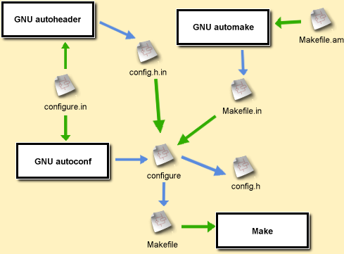

Makefile.am and produces Makefile.in.configure.in (or in Autoconf 2.5 the file configure.ac) and generates the ./configure script out of it.acconfig.h and generates the config.h.in template by parsing configure.in../configure, when ran by the user generates the normal Makefile out of Makefile.in and optionally processes other files (such as config.h.in -> config.h, an optional RPM Spec, Makefiles in other directories, etc.
# Define sub-directories of the project SUBDIRS = man # noinst_PROGRAMS are programs that should be compiled but not installed noinst_PROGRAMS = test_rwlock # Source files for test_rwlock test_rwlock_SOURCES = test_rwlock.c # Libraries to link against test_rwlock_LDADD = libpthread_rwlock_fcfs.la # Libraries that are built using libtool lib_LTLIBRARIES = libpthread_rwlock_fcfs.la # Where to install the headers libpthread_rwlock_fcfsincludedir=$(includedir)/pthread # The source files of the library libpthread_rwlock_fcfs_la_SOURCES = rwlock.c queue.c # A libtool library version numbers libpthread_rwlock_fcfs_la_LDFLAGS = -version-info 0:0:0 # The headers of the library libpthread_rwlock_fcfsinclude_HEADERS = rwlock_fcfs.h rwlock_fcfs_queue.h # Extra files in the distribution EXTRA_DIST += Docs/FCFS_RWLock_Scheme.txt Docs/FCFS_RWLock_Scheme_RLE.txt EXTRA_DIST += test_rwlock.c EXTRA_DIST += test_queue.cpp EXTRA_DIST += pthread/rwlock_fcfs.h pthread/rwlock_fcfs_queue.h EXTRA_DIST += TODO
dnl Process this file with autoconf to produce a configure script. dnl AC_INIT is the first macro that should be called in an Autoconf dnl script. It should be called with one argument that exhibits one dnl of the source files AC_INIT(rwlock.c) dnl Initialize Automake dnl The first parameter is the project name dnl The second is the version AM_INIT_AUTOMAKE(pthread_rwlock_fcfs, 0.4.0) dnl Initialize libtool AM_PROG_LIBTOOL dnl Checks for programs. AC_PROG_CC dnl Checks for libraries. AC_CHECK_LIB(pthread, pthread_create) dnl Checks for header files. AC_HEADER_STDC AC_CHECK_HEADERS(sys/time.h unistd.h) dnl Set the debug flag to no by default debug_rwlock=no dnl Set a command line option to set it otherwise AC_ARG_ENABLE(debug-rwlock, [ --enable-debug-rwlock Enable an RWLock that prints debug notices on the screen. This is a debugging feature which should not be usually enabled], [ debug_rwlock=yes ]) dnl If debug_rwlock is set if test "x$debug_rwlock" = "xyes" ; then dnl Define the macro PTHREAD_RWLOCK_FCFS_DEBUG AC_DEFINE(PTHREAD_RWLOCK_FCFS_DEBUG) fi dnl Checks for typedefs, structures, and compiler characteristics. AC_C_CONST AC_HEADER_TIME dnl Checks for library functions. AC_CHECK_FUNCS(gettimeofday) dnl Output the files AC_OUTPUT([Makefile man/Makefile])
This section will cover some commonly used Autoconf Macros.
AC_DEFINE can be used anywhere in the script, to define a C preprocessor macro.AC_DEFINE_UNQUOTED instead.AC_DEFINE(HELLO) AC_DEFINE(VERSION, "5.6") myvar="foo" othervar="bar" AC_DEFINE_UNQUOTED(TEST, "${myvar}${othervar}")
AC_CHECK_LIB checks for a presence of a symbol inside a library.-l[library] to compiler flags, and define the preprocessor macro HAVE_LIB[library].AC_CHECK_LIB(m, pow) if test "x$requires_libavl" = "xyes" ; then AC_CHECK_LIB(avl, avl_create, [], [ echo "Error! You need to have libavl around." exit -1 ]) fi
AC_ARG_ENABLE allows you to define another command line option.--enable-[option base]configure script is invoked with this option. In it the command line variable enableval would be set to the argumentAC_ARG_ENABLE(debug-rwlock, [ --enable-debug-rwlock Enable an RWLock that prints debug notices \ on the screen. This is a debugging feature which should not be \ usually enabled], [ debug_rwlock=yes ]) AC_ARG_ENABLE(states-type, [ --enable-states-type[=state type] Specify the states type: compact [default]: Compact States debug: Debug States (very slow) indirect: Indirect Stack States], [ if test "x$enableval" = "xcompact" ; then states_type=compact elif test "x$enableval" = "xdebug" ; then states_type=debug elif test "x$enableval" = "xindirect" ; then states_type=indirect else echo echo "Error!" echo "Unknown states' type" exit -1 fi ])
AC_OUTPUT generates files that are required for building the packages..in and convert them to their output files while substituting the output variable values.AC_OUTPUT([Makefile freecell-solver-config freecell-solver.spec], [chmod +x freecell-solver-config])
AC_CHECK_FUNCS checks for the existence of functions in the C standard library.HAVE_[function] is defined.AC_CHECK_HEADERS check for the existence of the header files specified as the first argument.HAVE_[header] (in all caps) is defined.configure.in uses [ and ] for grouping arguments.changequote(, ) at the beginning of the offending code and changequote([, ]) afterwards.AC_ARG_ENABLE(max-num-stacks, [ --enable-max-num-stacks[=stacks num] Set the maximal number of Stacks], [ if test "x$enableval" = "x" ; then max_num_stacks=8 else changequote(, ) # Check if it's indeed a number if echo "0$enableval" | grep '[^0-9]' > /dev/null ; then echo echo "Error!" echo "max-num-stacks should be a number!" exit -1 elif expr $enableval \< 8 > /dev/null ; then echo echo "Error!" echo "max-num-stacks cannot be lower than 8" exit -1 elif expr $enableval \> 20 > /dev/null ; then echo echo "Error!" echo "max-num-stacks cannot be greater than 20" exit -1 else max_num_stacks="$enableval" fi changequote([, ]) fi])
bin_PROGRAMS - programs that should be compiled and installed.bin_SCRIPTS - programs that should be installed but not compiledman_MANS - man pages that should be installed.lib_LTLIBRARIES - Libraries that should be built using libtool.noinst_PROGRAMS - Programs that should be compiled but not installed._'s instead of -'s etc) followed by _SOURCES followed by an equal sign and a list of the sources.lib_LTLIBRARIES = libpthread_rwlock_fcfs.la libpthread_rwlock_fcfs_la_SOURCES = rwlock.c queue.c
_LDADD variable and type the library name ending with .la._HEADERS directive.EXTRA_DIST argument holds a list of all the files that are part of the package, but are not installed by default and were not specified in any other way.$< as the source and $@ as the target.mylibrary_LDFLAGS one should specify an option like that: -version-info [CURRENT]:[REVISION]:[AGE].[CURRENT] is the most recent version of the library that the library supports.[REVISION] is the implementation number of the current interface (i.e: patch releases)[AGE] is the number of versions back that this version is still backwards compatible with.acconfig.h is used to generate config.h.in, which is the file used to generate config.h.#undef MYMACRO specifies that the macro should not be defined by default. If it was defined during the run of the ./configure script, it would replace it as such.#define MYMACRO specifies that the macro would always be defined, but its value may vary.autoheader can help in creating an initial config.h.in file./* config.h - Configuration file for Freecell Solver Written by Shlomi Fish, 2000 This file is distributed under the public domain. (It is not copyrighted). */ #ifndef FC_SOLVE__CONFIG_H #define FC_SOLVE__CONFIG_H #ifdef __cplusplus extern "C" { #endif #undef DEBUG_STATES #undef COMPACT_STATES #undef INDIRECT_STACK_STATES #undef CARD_DEBUG_PRES /* * Define this macro if the C compiler supports the keyword inline or * a similar keyword that was found by Autoconf (and defined as inline). * */ #undef HAVE_C_INLINE /* The sort margin size for the previous states array. */ #define PREV_STATES_SORT_MARGIN 32 /* The amount prev_states grow by each time it each resized. Should be greater than 0 and in order for the program to be efficient, should be much bigger than PREV_STATES_SORT_MARGIN. */ #define PREV_STATES_GROW_BY 128 /* The amount the pack pointers array grows by. Shouldn't be too high because it doesn't happen too often. */ #define IA_STATE_PACKS_GROW_BY 32 /* * The maximal number of Freecells. For efficiency's sake it should be a * multiple of 4. * */ #define MAX_NUM_FREECELLS 4 /* * The maximal number of Stacks. For efficiency's sake it should be a * multiple of 4. * */ #define MAX_NUM_STACKS 10 /* * The maximal number of initial cards that can be found in a stack. * */ #define MAX_NUM_INITIAL_CARDS_IN_A_STACK 8 #define MAX_NUM_DECKS 2 #define FCS_STATE_STORAGE_INDIRECT 0 #define FCS_STATE_STORAGE_INTERNAL_HASH 1 #define FCS_STATE_STORAGE_LIBAVL_AVL_TREE 2 #define FCS_STATE_STORAGE_LIBAVL_REDBLACK_TREE 3 #define FCS_STATE_STORAGE_LIBREDBLACK_TREE 4 #define FCS_STATE_STORAGE_GLIB_TREE 5 #define FCS_STATE_STORAGE_GLIB_HASH 6 #define FCS_STATE_STORAGE_DB_FILE 7 #define FCS_STACK_STORAGE_INTERNAL_HASH 0 #define FCS_STACK_STORAGE_LIBAVL_AVL_TREE 1 #define FCS_STACK_STORAGE_LIBAVL_REDBLACK_TREE 2 #define FCS_STACK_STORAGE_LIBREDBLACK_TREE 3 #define FCS_STACK_STORAGE_GLIB_TREE 4 #define FCS_STACK_STORAGE_GLIB_HASH 5 #undef FCS_STATE_STORAGE #undef FCS_STACK_STORAGE #ifdef __cplusplus } #endif #endif
configure script, first put it in the SUBDIRS variable of Makefile.amAC_CONFIG_SUBDIRS macro in configure.in to configure them as separate sub-directories.AC_OUTPUT.configure would expect a mylibrary-config.in file to be present, so you'll need to write a template for it there.mypackage.spec.in in the main directory of the package.Version: field should contain @VERSION@ as its contents.mypackage.spec to AC_OUTPUT.mypackage.spec and mypackage.spec.in to the EXTRA_DIST of Makefile.am.rpm -tb with the archive name as a parameter would build an RPM out of it.Autoconf, Automake and Libtool
Autobook - an online book about the GNU Autotools
An Autoconf Tutorial
Autotut - an Autotools tutorial
Contains a lot of predefined macros which are free for use.